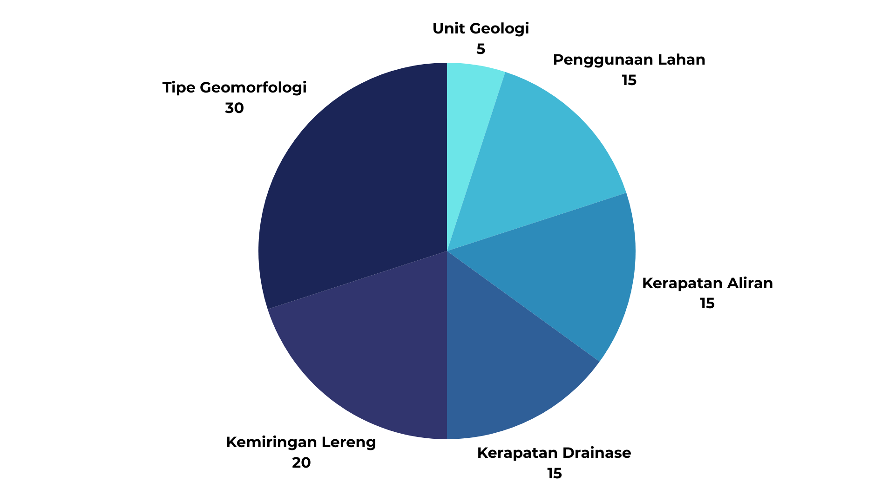

Gambaran Wilayah
DAS Randugunting terbentang dari 111°13'55.96" BT hingga 111°20'41.992" BT dan 6°41'13.615" LS hingga 6°54'35.398" LS.
Daerah Aliran Sungai dengan luas 143.716 km2 ini berada pada Wilayah Sungai Jratunseluna tepatnya di perbatasan Kabupaten Pati, Rembang, dan Blora. Bencana kekeringan menjadi bencana utama di wilayah DAS ini.

Parameter
Terdapat enam parameter yang digunakan, yaitu:
- 1. Geomorfologi (Peta Geomorfologi Lembar Rembang, Jawa Skala 1:100.000 Tahun 2013)
- 2. Kemiringan Lereng (Pengolahan SRTM30m)
- 3. Kerapatan Drainase (Pengolahan SRTM30m)
- 4. Kerapatan Kelurusan (Pengolahan SRTM30m)
- 5. Penggunaan Lahan (Klasifikasi Terselia Sentinel 2-A)
- 6. Unit Geologi (Peta Geologi Lembar Rembang, Jawa Skala 1:100.000 Tahun 1993 )
Peta Potensi Air Tanah